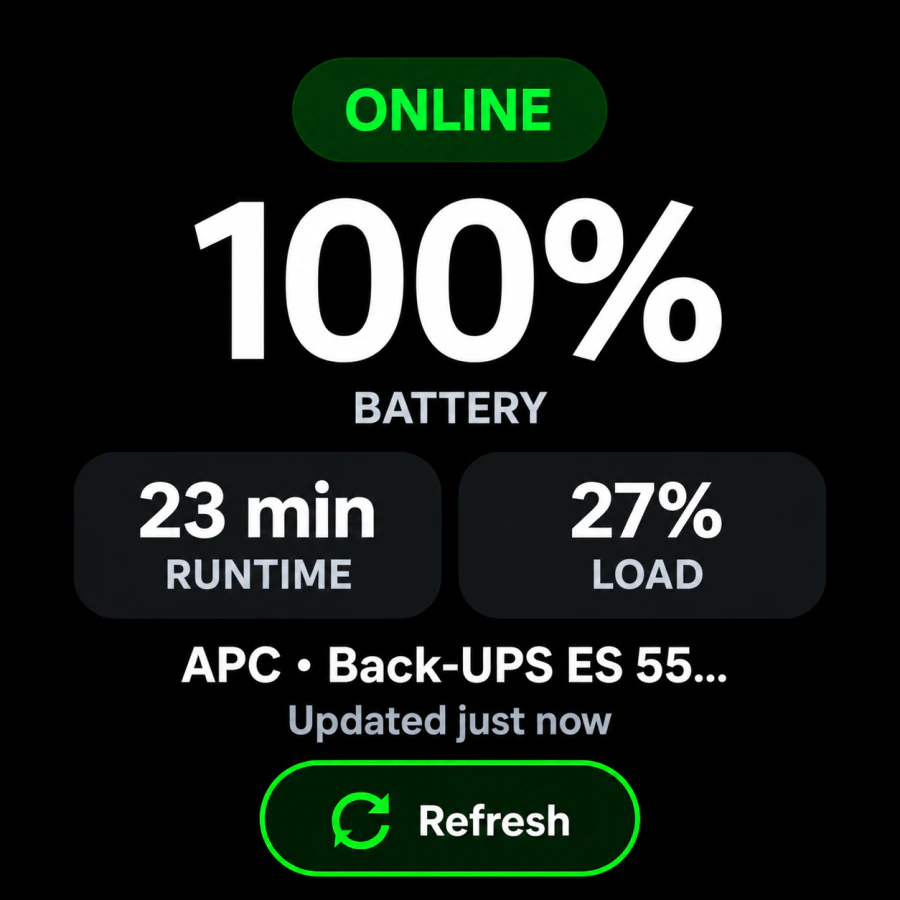
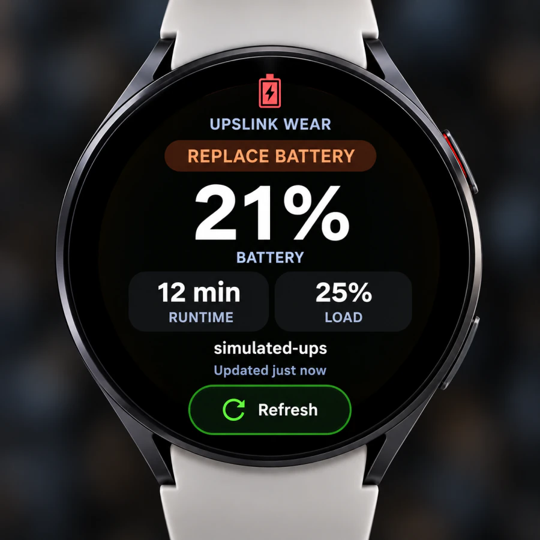
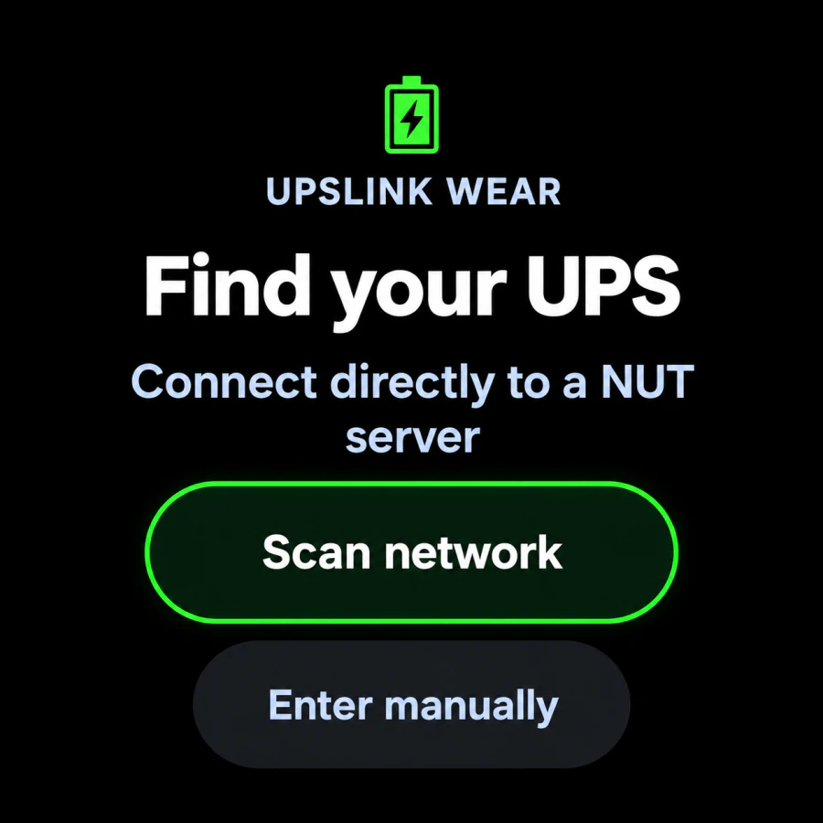
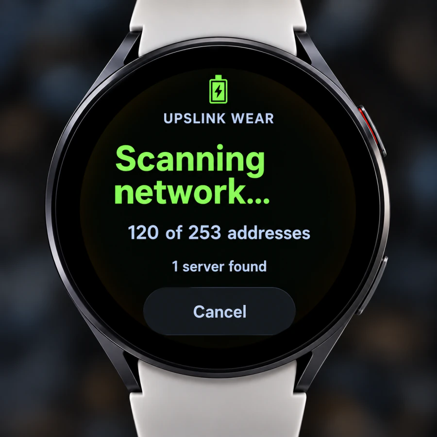

When the UPS protecting your NAS or homelab needs attention, the first questions are simple: is utility power available, how much battery remains, and what runtime does the UPS estimate? UPSLink for Wear OS puts those readings on your smartwatch without making you reach for your phone.
The companion complements the UPSLink Android app by bringing NUT-compatible UPS information to a smaller screen. For owners of a compatible Samsung Galaxy Watch or another supported Wear OS device, it offers a convenient way to check the power equipment behind a home server.
UPSLink Pro is a one-time purchase. The watch companion requires the appropriate active Pro entitlement; installing the companion alone does not unlock it. Use the paired Android phone to unlock Pro and synchronize that entitlement to the watch. After activation, UPS monitoring data travels directly between the watch and NUT server.
Why monitor your UPS from your wrist?
You might be moving equipment around the house, working behind a rack, or checking the NAS after a brief power interruption. A watch is useful for those short status checks: battery charge, runtime, load, and the current UPS state are often enough to decide whether to investigate further.
During an outage, remaining runtime helps you understand the available margin. It is an estimate affected by load, battery condition, and UPS firmware, so leave room for a controlled shutdown. The watch provides human visibility; local NUT shutdown automation should protect the servers independently.
Battery, runtime, and load on one screen
Read the UPS, not the watch battery
The dashboard shows the monitored UPS battery percentage prominently. In this example, it reports 100% battery, 23 min runtime, and 27% load, alongside an ONLINE status indicator and the UPS identity.
Runtime describes estimated operating time under the current conditions. Load describes UPS utilization. Reading both helps put the charge percentage in context: the same battery percentage can support very different runtimes under different loads.
The update text and Refresh control help you check data freshness. A last successful reading is not proof of a continuing connection; confirm that values update when you need a current view.

Available measurements depend on the UPS hardware, NUT driver, and server. A model that does not report runtime cannot supply a trustworthy runtime figure to the watch. The phone and watch interfaces also serve different screen sizes; do not assume every phone feature appears on the companion.
UPS battery and runtime on your watch face
UPSLink Wear OS complications display UPS battery level and estimated runtime directly on compatible watch faces. They make a quick power check possible without opening the companion dashboard, alongside the other information you choose for your watch face.
Open your watch face's customization controls, choose a supported complication slot, and select the available UPSLink battery or runtime provider. Names and presentation depend on the watch face, and not every slot accepts every data type. If a provider is unavailable in one slot, check another compatible slot or face.
Complications use cached UPS readings maintained by background refresh. They are convenient status indicators, not proof of uninterrupted connectivity. Open the dashboard and refresh when freshness matters. The images in this article show the companion app; watch-face layouts will look different.
Recognize a battery replacement warning
The warning example displays REPLACE BATTERY above the charge level, with runtime and load still visible. A replacement indication deserves attention even if the battery retains some charge: charge percentage alone does not establish battery health.
This supplied example is explicitly labeled simulated-ups. It demonstrates the warning presentation, not a measured fault in a particular production UPS. Investigate real warnings using the UPS manufacturer's guidance and the underlying NUT data.
Supported power states include online (OL), on battery (OB), low battery (LB), and replace battery (RB). A visible in-app warning does not promise an instant background notification.

How UPSLink Wear connects to your UPS
- UPSSupported USB or network connection
- NUT serverDriver and upsd publish UPS data
- Private networkReachable host, port, and permissions
- Wear OS watchUPSLink requests status
Once unlocked, the watch connects directly to a compatible NUT server over Wi-Fi or another available network; monitoring data does not need to pass through the phone. It does not pair directly with a USB-connected UPS. That server might run on a Raspberry Pi, Synology NAS, Unraid server, TrueNAS system, or Linux homelab host, provided the installation exposes an accessible NUT service. Local NAS UPS monitoring alone does not establish that a network service is available.
NUT normally uses TCP port 3493. The watch needs a working network path to the configured address and port, with NAS firewall rules and permitted-client settings allowing access. Consult the Network UPS Tools guide for the server architecture.
The companion supports anonymous NUT status access and optional username/password authentication. Where credentials are required, use a dedicated monitoring account; stored credentials are protected with Android Keystore encryption. UPSLinkWear is read-only: it queries information without issuing shutdown, self-test, or other disruptive commands.
Discover a NUT server or enter it manually
The companion's Find your UPS screen offers Scan network and Enter manually. Scanning helps find a server on an accessible local network; manual entry is useful when you already know the endpoint or discovery cannot cross network boundaries.


One server found does not mean every device is reachable or that every UPS is supported. Confirm the expected host and verify the resulting readings. Network segmentation, guest Wi-Fi isolation, service listeners, and client permissions can all affect discovery or connection.
Getting started with UPSLink Wear OS
- Prepare NUT. Confirm your UPS and server work locally and note the server address, port, and any required NUT credentials.
- Install UPSLink on Android. Use the official Google Play listing. The illustrated phone setup tutorial helps verify the NUT endpoint before adding another client.
- Install the Wear OS companion on a compatible watch. Check Google Play availability for that device rather than assuming a phone installation also installs the watch app.
- Unlock Pro through the phone. Purchase or activate the one-time UPSLink Pro upgrade in the Android app through Google Play. Keep the paired watch connected so the phone can send its Pro entitlement through Google's Wearable Data Layer. The watch stores the received entitlement and unlocks monitoring; purchases are managed by the phone app, not the watch.
- Connect from the watch. Open the companion and choose Scan network or Enter manually on Find your UPS. Connect to the intended NUT endpoint and monitored UPS.
- Verify the dashboard and add complications. Check the UPS identity, battery, runtime, load, and status. Use Refresh to verify the connection. If desired, select UPSLink battery or runtime data in a compatible watch face's supported complication slots.
If activation is incomplete, resolve the phone/watch entitlement state before troubleshooting NUT. If activation succeeds but readings fail, check the network path and server permissions. These are separate requirements.
Samsung Galaxy Watch and other Wear OS devices
A Samsung Galaxy Watch UPS monitor setup requires a model running supported Wear OS software and a compatible companion installation. The Galaxy Watch name alone is not sufficient: older Samsung watches using Tizen should not be treated as Wear OS devices.
The companion requires Android API 30 or later on a compatible Wear OS watch. Check its Google Play availability on your actual device; software version, screen size, and connectivity still matter. This requirement does not establish compatibility with every Samsung watch.
Everyday homelab uses
- At home with a Galaxy Watch: check the UPS after adding equipment and compare load and estimated runtime with your normal baseline.
- A UPS protecting a Synology NAS: view power readings through the accessible NUT endpoint. This is UPS monitoring, not NAS disk or storage-health monitoring.
- During a power interruption: check UPS state and estimated runtime while local shutdown automation protects hosts.
- A watch-face status check: use battery or runtime complications in supported slots without opening the dashboard.
- A homelab with several UPS devices: keep each server and UPS identity clear. The phone app supports multiple UPS devices; verify the watch companion's available selection controls before planning the same workflow on the wrist.
Connectivity, refresh, and other requirements
A paired phone does not automatically make every private NUT server reachable from the watch. Confirm the watch's actual network path. If you need access away from home, the remote NAS monitoring guide explains private VPN routing, but its Android phone setup does not establish that a watch has independent VPN support or inherits the phone's tunnel.
Keep NUT private; do not expose TCP 3493 publicly. Remote visibility depends on server availability, a working route, and powered networking equipment. During an outage, the router or internet connection may fail before the UPS battery is exhausted.
The companion periodically refreshes UPS information in the background and caches readings for the app and complications. Wear OS scheduling, power management, and connectivity can delay updates; cached data may outlast a connection. After entitlement activation, a phone relay is not needed for NUT queries, but the watch still needs network access. Do not assume instant alerts or continuous polling.
Wear OS UPS monitoring FAQ
Can I monitor my UPS from a Samsung Galaxy Watch?
Yes, on a compatible Galaxy Watch running supported Wear OS software, with the UPSLink companion, active Pro entitlement, and a reachable NUT server. Older Tizen watches are a different platform.
Does UPSLink work with Wear OS?
UPSLink has a Wear OS companion included with UPSLink Pro, a one-time purchase. It complements the Android app with a watch dashboard and NUT connection setup.
Do I need a NUT server?
Yes. UPSLink reads a compatible NUT endpoint; the watch does not connect directly to the UPS USB cable.
Does UPSLink Wear OS require a phone?
The phone manages the Pro purchase and sends the entitlement to the paired watch. Once unlocked, the watch queries NUT directly over an available network; the phone does not relay monitoring data.
Is the Wear OS companion included with UPSLink Pro?
Yes. The companion requires the appropriate UPSLink Pro entitlement. Pro is a one-time upgrade purchased in the Android phone app; the watch does not process a separate purchase.
Can I monitor multiple UPS devices?
The Android phone app supports multiple UPS devices. Check the installed watch companion's UPS selection options before assuming that it provides the same multi-device workflow.
Can I display UPS battery information on my watch face?
Yes. UPSLink complications provide UPS battery level and estimated runtime. Choose a supported slot on a compatible watch face; availability and presentation vary by face.
Does it work with Synology, Unraid, or Raspberry Pi?
These can host compatible NUT services. Your specific configuration must expose the UPS data and allow the watch to reach the service; platform name alone does not guarantee access.
Bring UPS Monitoring to Your Wrist
Start with UPSLink on Android, verify your NUT server with the setup tutorial, and add the compatible Wear OS companion with your one-time Pro purchase.
Explore more features and guides on the UPSLink homepage.